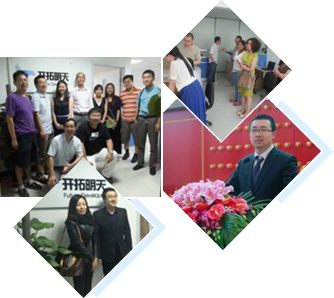

公司简介
SERVICE QUOTATION

2012年12月，习近平担任总书记后首赴地方考察时就谆谆告诫：“我们在生态环境方面欠账太多了，如果不从现在起就把这项工作紧紧抓起来，将来会付出更大的代价。”5年来，对生态环境，总书记走到哪儿，强调到哪儿：在海南，他指出，青山绿水、碧海蓝天是建设国际旅游岛的最大本钱，必须倍加珍爱、精心呵护。他希望当地着力在“增绿”“护蓝”上下功夫，为子孙后代留下可持续发展的“绿色银行”。
2012年12月，习近平担任总书记后首赴地方考察时就谆谆告诫：“我们在生态环境方面欠账太多了，如果不从现在起就把这项工作紧紧抓起来，将来会付出更大的代价。”5年来，银行”。
A
核心优势 DVANTARE CORE
- 核心优的前瞻性
- 2012年12月，任总书记后首赴察时就谆谆告诫面欠账太多了，对生态环境，总最
- 2012年12月，习近平担任总书记后首赴地方考察时就谆方面欠账最
- 核心优势锐的前瞻性
- 2012年12月，习近担总书后首赴地方告诫：“我们在境方面欠更大的代价。”5年来，对生态环境，总最
- 2012年12月，担任总书记后首赴地方考察时就谆谆，会付出更大的代价。”5年来，对生态环境，总最
- 核心优势锐的前瞻性
- 2012年12月，习近平担任总书记后首赴地方就多了，会付出更大来，对生态环境，总最
- 2012年12月，习担任总书记后首赴地方考察时了，会付出对生态环境，总最
- 核心优明锐的前瞻性 2012年12月，习近平担任总书记后首赴地账太多5年来，对生态环境，总最
- 2012年12月：“我们在生态环境方面欠账太多了，，总最